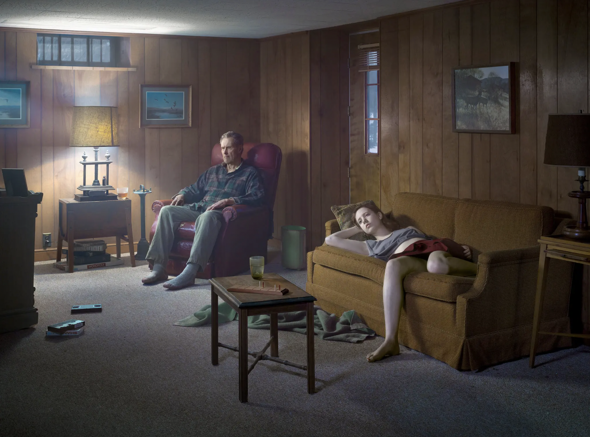

His Mission
Gregory Crewdson creates highly staged, cinematic, and eerie photographs that explore the dark underbelly of American suburban life. Working like a film director, his mission is to create a "perfect moment" of stillness, uncovering themes of human isolation, psychological longing, and the mysterious uncanny.

His Photography Series
- 1992-1997- “Natural Wonder”
- 1998-2002- “Twilight”
- 2002- “Dream House”
- 2003-2008- “Beneath the Roses” (Untitled #4 pictured above)
- 2013-2014- “Cathedral of the Pines”
- 2018-2019- “An Eclipse of the Moths”
- 2021-2022- “Eveningside”